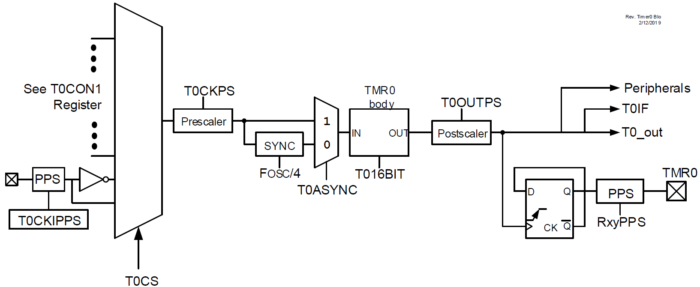
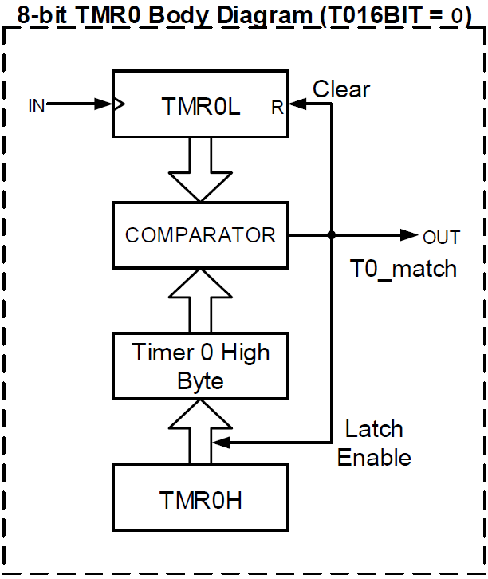
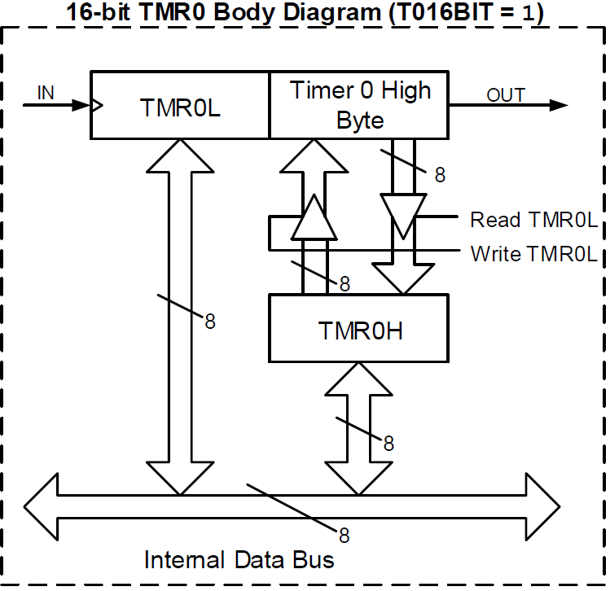

Temporizadores¶
El PIC18F57Q43 cuenta con tres módulos de temporización principales:
| Módulo | Resolución | Uso típico |
|---|---|---|
| TMR0 | 8 o 16 bits | General |
| TMR1 | 16 bits | Tiempo preciso |
| TMR2 | 8 bits | PWM, ADC |
Timer 0 (TMR0)¶

Descripción general¶
- Temporizador/contador de 8 o 16 bits que incrementa su valor en cada flanco positivo de la fuente de reloj.
- Cuando llega al valor máximo ocurre un overflow (16 bits) o un match (8 bits). En ambos casos, se reinicia la cuenta.
- Si un evento de overflow/match ocurre la cantidad de veces configurada en el postscaler, se levanta la bandera
T0IF(PIR3<7>) yT0_out(CON) se alterna. - La cuenta actual está en los registros
TMR0LyTMR0H(en 8 bits soloTMR0L).
Configuración básica
- Configurar
T0CON1(fuente de reloj) yT0CON0(modo y prescaler). - 8 bits: Escribir en
TMR0Hel valor final + 1. - 16 bits: La cuenta máxima es 65 535. Se puede inicializar la cuenta escribiendo en
TMR0H:TMR0LconEN = 0. - PPS: Escribir en
RxyPPSel valor0x39. Solo para RC y RF. Divide ÷2 la frecuencia deT0_out. - T0IF: Encender
PIE3<7>. BajarPIR3<7>al atender la interrupción.
Modo 8 bits¶
Como se aprecia en su diagrama de bloques, el TMR0L es comparado con TMR0H en cada cuenta. Si son iguales, se genera un match y el TMR0L se reinicia a 0. Por lo tanto, en modo de 8 bits, se puede contar hasta 254 porque al llegar a 255 se genera el match y se reinicia a 0.
Para configurar la \(\text{cuenta máxima}\), se debe escribir en TMR0H el \(\text{valor final} + 1\) deseado.
Ejemplo
Si se escribe 100 en TMR0H, el TMR0L contará desde 0 hasta 99 (100 cuentas) y luego ocurrirá el match.

Modo 16 bits¶
La cuenta máxima en modo de 16 bits es 65 535, ya que TMR0H:TMR0L incrementa hasta llegar a su valor máximo (FFFF) y luego ocurre un overflow, reiniciándose ambos registros a 0.
Orden de lectura / escritura
- Leer: primero
TMR0L, luegoTMR0H. - Escribir: primero
TMR0H, luegoTMR0L.

Registros de configuración¶
T0CON0 — BSR = 3¶
| Bit | 7 | 6 | 5 | 4 | 3 : 0 |
|---|---|---|---|---|---|
| Nombre | EN |
— | OUT |
MD16 |
OUTPS[3:0] |
| Acceso | R/W | — | R | R/W | R/W |
| Reset | 0 | — | 0 | 0 | 0 |
EN- Habilita el temporizador. La cuenta se pausa si se deshabilita.
OUTT0_out— salida del temporizador que se alterna al ocurrir la interrupción.MD16- Selecciona modo 8 o 16 bits (
1= 16 bits). OUTPS[3:0]- Postescalador de salida. Cuenta \((\text{valor})\) eventos antes de levantar la bandera.
T0CON1 — BSR = 3¶
| Bit | 7 – 5 | 4 | 3 | 2 – 0 |
|---|---|---|---|---|
| Nombre | CS[2:0] |
ASYNC |
CKPS[3] |
CKPS[2:0] |
| Acceso | R/W | R/W | R/W | R/W |
| Reset | 0 | 0 | 0 | 0 |
CS[2:0]- Selecciona la fuente de reloj: CLC1_OUT, SOSC, MFINTOSC 500 kHz, LFINTOSC, HFINTOSC, Fosc/4, \(\overline{\text{T0CKIPPS}}\), T0CKIPPS.
ASYNC1= fuente asíncrona ·0= síncrona con el reloj del sistema.CKPS[3:0]- Prescaler — divisor de frecuencia: \(2^{(\text{valor})}\).
TMR0H y TMR0L — BSR = 3¶
| Bit | 7 – 0 | 7 – 0 |
|---|---|---|
| Nombre | TMR0H[7:0] |
TMR0L[7:0] |
| Acceso | R/W | R/W |
| Reset | FFh |
00h |
Registros de interrupción¶
| Registro | Bit | Nombre | Descripción |
|---|---|---|---|
PIR3 (BSR = 4) |
<7> |
TMR0IF |
Flag de interrupción |
PIE3 (BSR = 4) |
<7> |
TMR0IE |
Habilita la interrupción |
IPR3 (BSR = 3) |
<7> |
TMR0IP |
1 = alta prioridad |